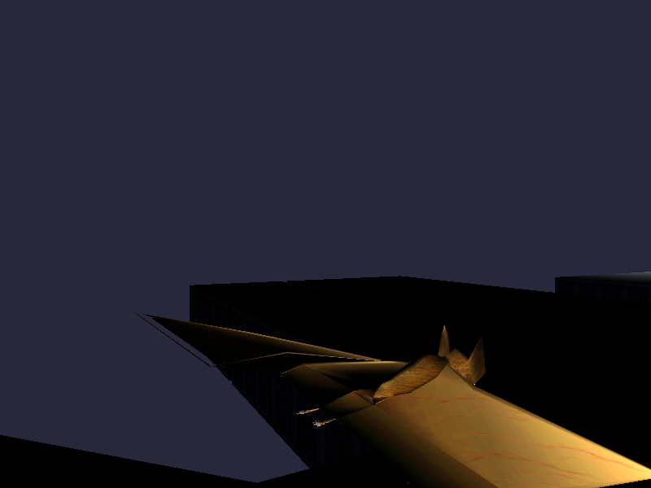
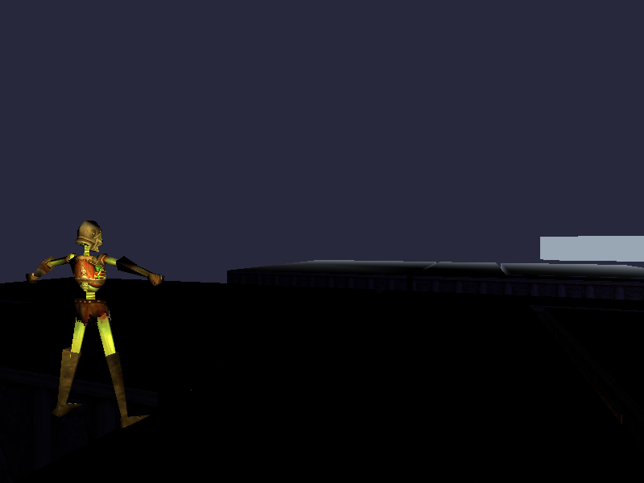
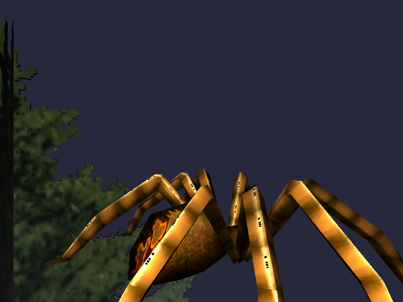
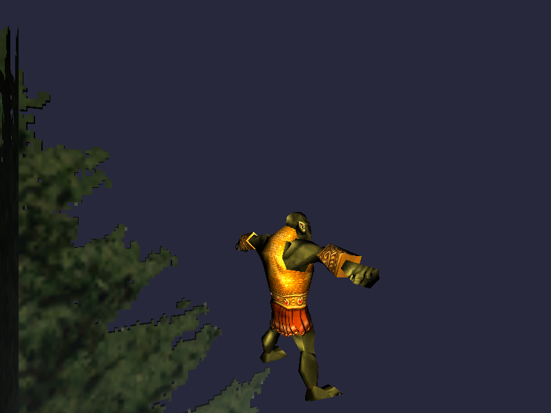
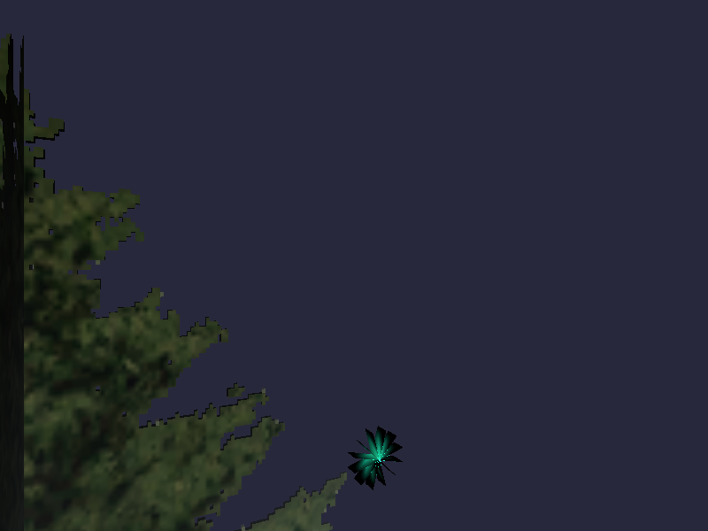

BAT_HS_DEF
befallen, non-humanoid
baseline (multi-buffer)

composite

0 / 480000 px differ (0.000%)
mean |Δ| = 0.000
max channel Δ = 0
PASS — pixel-identical
Method: gles2_zone_benchmark --entities 1 --test-races <id> --orbit-anchor-surface --orbit-radius 6
--dump-frames <f> for baseline (default entity draw path), and the identical camera path replayed via
--path-file with --composite-scenegraph (real composite mesh + production
compositeEntityPath lookup, routed through the SAME draw dispatch as baseline — the P08d
apples-to-apples fix) for the composite side. Single entity per run (no co-located fixtures, avoiding the P08d
z-fight lesson). All 5 models below are NEW coverage from this unit (befallen_chr.s3d / gfaydark_chr.s3d
zone-native NPCs, previously structurally unbuildable). Bar (P08d precedent): 0 differing pixels.
| race | zone | body type | differing px | % | mean abs Δ | max Δ | verdict |
|---|---|---|---|---|---|---|---|
| BAT_HS_DEF | befallen | non-humanoid (bat) | 0 | 0.000% | 0.000 | 0 | PASS |
| ZOM_HS_DEF | befallen | humanoid (undead) | 0 | 0.000% | 0.000 | 0 | PASS |
| SPI_HS_DEF | gfaydark | non-humanoid (spider) | 0 | 0.000% | 0.000 | 0 | PASS |
| ORC_HS_DEF | gfaydark | humanoid (orc) | 0 | 0.000% | 0.000 | 0 | PASS |
| WIL_HS_DEF | gfaydark | non-humanoid (will-o-wisp) | 0 | 0.000% | 0.000 | 0 | PASS |









Not self-declared acceptable — for Will's spot-review. Sheets audited structurally clean (sheet_audit_new.json, sheet_audit_all286.json). Coverage before/after per golden zone in coverage_before_after.json. Full build report in report_golden_zones.json.